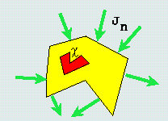
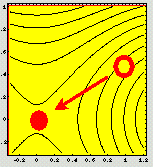
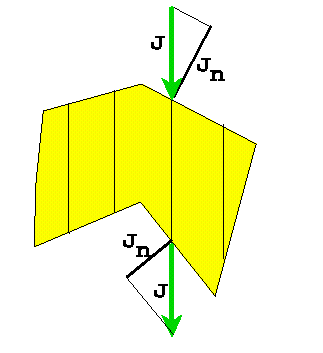
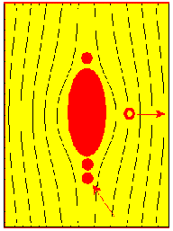
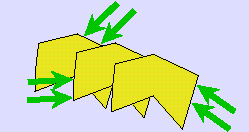
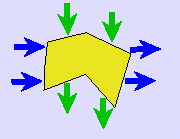
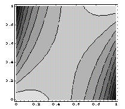

Andrej and Elena Cherkaev
|
Red Spot - hides in the Domain.
Green Current - seeks Red Spot. Inverse Problem - states the problem. Optimi-Zation - solves the problem.
|
Game Theory - gives the mixed strategy for Green Current.
Optimal Composites - provide an asylum for Red Spot who finally dissolves itself. Choir: Technical Diagnostics and Tomography - represent applications. |
|  |
I. Red player places inclusions (damaged material) of fixed
total volume somewhere inside the domain.
II. Green player detects them by injecting arbitrary boundary currents of fixed energy. III. The goal of Red is to minimize the energy difference between spot-free sample and the real one, the goal of Green is to maximize it. IV. Green has no information about the Red's strategy. |
|  | The measured response is proportional to the field density
in the neighborhood of the inclusion. Therefore:
I. The `worst' inclusion hides itself where the field density is minimal. II. An optimal current maximizes the minimum throughout the domain of its absolute value, hence the density of an optimal field is constant everywhere. |
|  |
The best strategy for the Green is to make the field inside the tested body uniform.
The class of Green Currents always contains Neumann data which provide a constant field inside any homogeneous domain (see the picture). The constant fields density is independent of the direction of an optimal current. This direction can be arbitrary chosen. |
|  | A shape of the most hidden inclusions.
Hidden inclusions are elongated along the lines of the field: additional portions of the inclusion material hide in the shadow of seed inclusions. |

|
In
order to hide itself the inclusion disperses and forms laminates oriented along the field.
One can check that these laminates fit the necessary conditions of optimality: the current is constant, the inclusions lead to minimal disturbance of the energy. |
 |
The most unfortunate distribution of inclusions: homogeneous laminates oriented along the field. The effective properties of laminates lead to an analytical lower bound for detectability which is independent of the shape of the domain. |
|  |  |
| either a constant current with random orientation is applied and the mean of detectability is maximized, | or two orthogonal constant currents are applied. |
 | In the reformulated (relaxed) problem, Red uses Laminates of Second Rank which can be adjusted to minimize the sum of energies due to two orthogonal currents by changing the free parameter of inclusion density in the inner layers |
|  | The reformulated problem possesses a saddle point solution.
Optimal solution of the game is achieved by choosing the degree of anisotropy of the composite and the magnitude of one of the applied currents. |
 |
Green strategy : the magnitudes of two orthogonal currents are equal
Red strategy: The worst location of inclusions is a uniform isotropic composite of the minimal conductivity. This solution gives an analytical lower bound for detectability in the reformulated (relaxed) problem. |

 ELENA ELENA
|  ANDREJ ANDREJ |